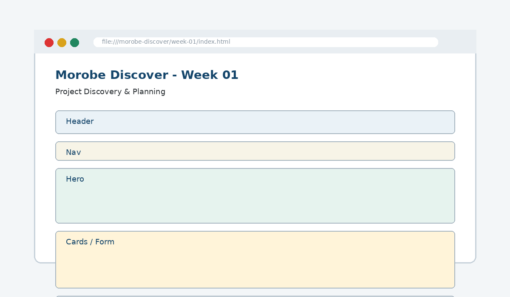

Project Discovery & Planning
Define the project problem, identify users/tasks, and structure the site architecture.

How this week's learning connects
1. Reading
Build the conceptual foundation and vocabulary for Project Discovery & Planning.
2. Lecture
Inspect the core principle, code patterns and visible browser result.
3. Lab
Complete the guided build tasks with checkpoints, testing and Git evidence.
4. Morobe Discover
Integrate the result into the same project and preserve earlier features.
Problem statements
Guide feature decisions before code is written.
Personas
Represent realistic users, needs and tasks.
Sitemaps & wireframes
Plan page structure and layout before implementation.
Read the code line by line
# Morobe Discover
Week 01 creates planning evidence.
## Output
- Project brief
- User stories
- SitemapHome
├── Destinations
├── Events
├── Plan a Trip
└── AboutWhat it does → Why it works → Where we use it
# Morobe Discover
# creates a top-level Markdown heading for the project documentation.## Output
## creates a second-level section heading so the README can be scanned.- Project brief
The dash creates a list item; use lists to make project deliverables explicit.
Project connection: This code belongs to the Week 01 Morobe Discover increment and should produce a visible or testable change related to Project brief, personas, user stories, sitemap, wireframe and repo scaffold.
Editable browser playground
Modify the example, run it, break it deliberately, and reset it. The preview is isolated from the course page.
Morobe Discover tasks
- Write a purpose statement
- Create three user personas
- Write five user stories with acceptance checks
- Draw the sitemap and homepage wireframe
- Create README.md and placeholder index.html
Checkpoint tests
Morobe Discover — Week 01
This is the actual source project increment supplied for this week.
Check your understanding
Knowing the definition is not enough
A weak submission can define Project Discovery & Planning but cannot point to the exact Morobe Discover file, code line and browser result. During code defence, be ready to connect code → visible behaviour → user reason → test evidence.
Prepare the next checkpoint
Week 02 converts the planned wireframe regions into HTML5 semantic page structure.